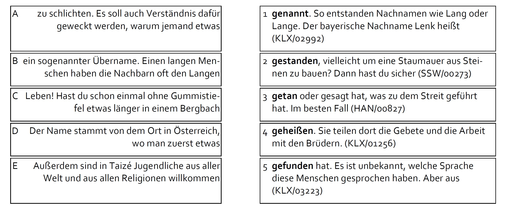

Starke Verben
Profil
| Sprachniveau | A1-B1 |
| Zielsprachhandlung | Korrekte Verwendung häufiger starker Verben ##Das ist keine pragmatische Sprachhandlung## |
| Zielstruktur | Die 20 häufigsten starken Verben (nach der Herder-Liste) |
| Anvisierte DDL-Aktivität | Hands-off mit vorgefertigten Listen (Link auf „Material“) |
Szenario
In Ihrem Kurs auf Sprachniveau A1 bis B1 sollen Ihre Lernenden die Formen der starken Verben einüben, besonders Formen im Infinitiv, Präteritum und Partizip Perfekt („Stammformen“), sowie die Formen im Kontext verwenden. Mit Material aus dem KED wollen Sie form-fokussierende Übungsaufgaben erstellen. Hier finden Sie vorausgewählte Belege der 20 häufigsten starken Verben in ihren relevanten Formen.
Schritt-für-Schritt
Vorwissen zu starken und schwachen Verben aktivieren
- Durchsuchen Sie die vorausgewählten Belege nach Kontexten, die neben den starken Verbformen auch schwache Verbformen enthalten. Kopieren Sie die gewünschten Belege einzeln in eine Textdatei.
- Erstellen Sie mit den kopierten Belegen eine Aktivität, bei der die Lernenden die starken Verbformen in den Belegen entdecken sollen.
Aufgabe Unterstreichen Sie alle Formen starker Verben in den folgenden Schnipseln.
(1) […] sie wäre. Sie besuchte eine Schule in der englischen Stadt Birmingham und schrieb Bücher über ihr Leben. Sie erhielt weitere Preise für ihren Einsatz für […] (KLX/01912)
(2) […] Diese Filme spielen vor den alten Filmen. Lucas hat dafür neue Schauspieler genommen. Mit den Filmen verdiente Lucas viel Geld, doch waren viele Zuschauer enttäuscht […] (KLX/00777)
(3) […] Sträuchern oder Stauden. Kommt das Obst von Bäumen in der freien Natur, spricht man von Wildobst. Fallobst ist Obst, das bereits vom Baum auf den […] (KLX/03110)
…
Konkrete Nutzungsvorschläge mit Übungsbeispielen
Zur Aktivierung des Vorwissens zu schwachen und starken Verben kann eine Entdecken-Lassen-Aufgabe dienen (A1).
A 1 Markieren (unterstreichen) Sie alle Formen starker Verben in den folgenden Belegen aus dem Korpus einfaches Deutsch.
(1) […] sie wäre. Sie besuchte eine Schule in der englischen Stadt Birmingham und schrieb Bücher über ihr Leben. Sie erhielt weitere Preise für ihren Einsatz für […] (KLX/01912)
(2) […] Diese Filme spielen vor den alten Filmen. Lucas hat dafür neue Schauspieler genommen. Mit den Filmen verdiente Lucas viel Geld, doch waren viele Zuschauer enttäuscht […] (KLX/00777)
(3) […] Sträuchern oder Stauden. Kommt das Obst von Bäumen in der freien Natur, spricht man von Wildobst. Fallobst ist Obst, das bereits vom Baum auf den […] (KLX/03110)
(4) […] und Schätze „Mist, wo habe ich denn jetzt meine tolle neue Mütze gelassen?“Hektisch sucht Simon in der Schultasche, in seiner Jacke, an der Garderobe […] (RKI/00006)
(5) […] Weltmeisterschaft spielte er mehrere großartige Spiele und hielt spektakuläre Bälle. Spätestens seitdem galt er als bester Torwart der Welt. Er wurde viermal zum Welttorhüter ausgezeichnet […] (KLX/02817)
(6) […] von Apple aufgekauft wurde. Er beteiligte sich auch an Pixar. Diese Firma brachte erfolgreiche Computertrickfilme ins Kino. In den Jahren nach 2000 sorgte Jobs dafür […] (KLX/01949)
Wenn der Vokalwechsel im Präsens im Fokus stehen soll, dann könnten Sie jeweils die Belege der Verbformen Nr. 1-7 als Lückentext erstellen (A2):
A2 Setzen Sie die passenden Verbformen von geben ein.
(1) Bei denen, die das Geld schließlich annahmen, passierte zum Teil etwas Seltsames: „Ich ……….. den Schein weiter“, versicherten die einen.” Ich spende euch zehn Franken zurück (FLU/00032)
(2) dürfen ihre Interessen vertreten. Manche Konzerne haben zum Beispiel viel Geld. Und sie ……….. vielen Menschen Arbeit. Sie dürfen sich zum Beispiel dafür einsetzen, dass die (BPB/00013)
(3) wir erklären den Unterschied zwischen dem Verbrauchsdatum und dem Mindest-Haltbarkeitsdatum. Und wir ……….. Ihnen brauchbare Tipps – so können Sie selbst prüfen, ob ein Lebensmittel noch (BZE/00011)
(4) Liter Wasser hinein. Das Ganze lässt du über Nacht stehen. Am nächsten Tag ……….. du das Ganze in eine Schüssel. Dann gießt du etwa 1 Liter (SSK/00047)
(5) sind laut, schmutzig oder haben einen schlechten Ruf. Wie viele Großstädte ……….. es? In Deutschland ……….. es etwa 80 Großstädte, die meisten (KLX/01271)
(6) Vertrag steht zum Beispiel: Der Käufer muss Geld bezahlen, der Verkäufer ……….. ihm dafür die Schlüssel für das Haus. Der Käufer und (KLX/00985)
Um es etwas anspruchsvoller zu machen, können Sie die Formen von mehreren Verben eintragen lassen (A3):
A3 Setzen Sie die passenden Verben in der korrekten Form ein: geben – gelten – halten – nehmen
(1) Lass die Eier etwa 10 min kochen. Nach dem Kochen ……….. du die Eier mit einem Löffel aus dem Wasser. Wenn sie noch (SSJ/00003)
(2) glockenähnlicher Klang zu hören. Wenn du die Schnur nicht an die Ohren ……….., ist der Klang viel leiser. (SSK/00017)
(3) können nicht alle kranken Kinder die Medizin bekommen, die sie brauchen. Das ……….. sowohl in Apotheken als auch in Krankenhäusern. Immer mehr Familien sind besorgt (KSN/00225)
(4) In der Fastfood-Küche verwendet man keine oder fast keine frischen Lebensmittel. Stattdessen ……….. man Essen aus der Tiefkühltruhe. Zusammen mit Öl wird das Essen dann (KLX/00049)
(5) Die Menschen sind frei und tun, was sie für richtig halten. Es kann trotzdem Regeln ……….., an die sich Menschen freiwillig ………… Jemand (KLX/01827)
(6) Mutter ernährt ihre Jungtiere etwa einen Monat lang mit ihrer Milch und ………… sie warm. Nach etwa einer Woche öffnen sie die Augen. Richtig gut (KLX/02137)
Auf ähnliche Weise lassen sich andere Schwerpunkte (Präteritalformen, Partizipialformen) thematisieren. Sowohl Form als auch Bedeutung der Verben lassen sich hier nur über die Berücksichtigung des Kontexts ermitteln. Dies kann rein rezeptiv erfolgen (A4 zu Partizipialformen) oder als Lückentext (A5 zu Präteritalformen).
A4 Welche Teile passen zusammen?
A-3, B-…. , C-…. , D-…. , E-…..

A5 Ergänzen Sie die Verben in der passenden Form: schreiben – bringen – lassen – heißen – denken – kommen – finden
| (1) Jahren. Er war etwa neun Meter lang und vier Meter hoch. Er | ________ | ein Gewicht von bis zu 12 Tonnen auf die Waage. Damit wog (KLX/00530) |
| (2) sie wäre. Sie besuchte eine Schule in der englischen Stadt Birmingham und | ________ | Bücher über ihr Leben. Sie erhielt weitere Preise für ihren Einsatz für (KLX/01912) |
| (3) sie ziemlich arm: ihre Mutter starb, sie bekam ihr erstes Kind, sie | ________ | sich von ihrem Ehemann scheiden. Die Reihe der Harry-Potter-Romane machte sie reich (KLX/02885) |
| (4) waren vier Brüder, die in der Zeit des Wilden Westens lebten. Sie | ________ | Bob, Grattan, Emmet und Bill und waren berühmte Banditen. Um das Jahr (KLX/02564) |
| (5) Die Spezialeffekte waren noch nicht so weit. Aber um das Jahr 1994 | ________ | er, dass man mit digitaler Technik nun solche Szenen drehen konnte, wie (KLX/00777) |
| (6) diese Stoffe kommen in der Natur vor, und lange bevor der Mensch | ________ | , wurden sie durch die Hitze von Vulkanen verschmolzen und zum ersten Naturglas (SSW/00313) |
| (7) Er hatte auch schon Land rund um den Hügel aufgekauft. Er | ________ | aber nichts und verbrauchte sein ganzes Geld. Darum überzeugte er Schliemann, weiterzugraben (KLX/02435) |
Dies ist nur eine kleine Auswahl an möglichen Übungen, die sich mit den starke-Verben-Listen erstellen lassen.
Wie kann man im KED selbständig nach weiteren Belegen für die starken Verben suchen?
Wenn Sie gezielt nach allen Formen eines bestimmten Verbs suchen wollen, dann können Sie die Lemma-Suche nutzen, z.B. ergibt die Sucheingabe [base=nehmen] 1601 Treffer im KED. Auch die Suche nach Wortformen ergibt – je nach Verb – eine große Trefferzahl, die Eingabe nehme|nimmt|nimmst|nehmen, also die Suche nach Präsensformen, bringt 1131 Treffer.
Um gezielt nach Präteritalformen zu suchen, geben Sie nahm|nahmen ein und Sie erhalten 211 Treffer; für die Eingabe genommen werden 173 Treffer ausgegeben.
Tipp: Um die Treffermenge zu reduzieren, könnten Sie von vornherein die Auswahl auf Texte im KED beschränken, in denen ein vergleichsweise häufiger Wortschatz vorkommt. Dies geht über den Filter „Textdeckung: Herder1K“: Wenn Sie die Schieberegler auf 60% - 80% einstellen, dann wird nur in Texten gesucht, die einen relativ hohen Anteil an häufigen Wörtern enthalten, genauer an Wörtern, die zu den 1000 häufigsten Wörtern nach der Herder-Liste gehören. Durch diese Einstellung ist zu erwarten, dass die Texte lexikalisch verhältnismäßig einfach sind.
Auf diese Art und Weise können Sie auch nach weiteren starken Verben oder überhaupt nach anderen Verben suchen.
© Daniel Jach und Gunther Dietz 2024. All rights reserved. | Impressum